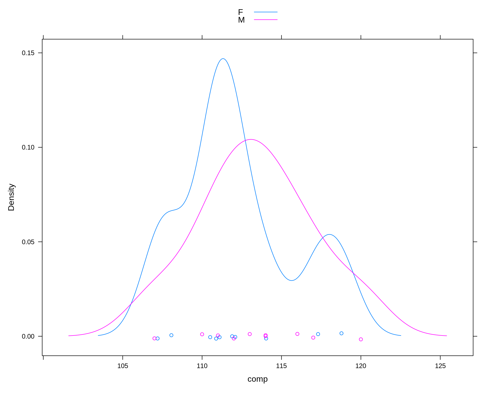

Métodos de reamostragem
Bootstrap (não paramétrico)
Fernando P. Mayer
1 Introdução
Os métodos de Bootstrap são uma classe de métodos de Monte Carlo não paramétricos, que estimam a distribuição de uma população por reamostragem
- Métodos de reamostragem tratam a amostra observada como uma população finita
- A distribuição da população finita representada pela amostra observada, pode ser pode ser entendida como uma pseudo-população, com características similares às da população original
- Amostra aleatórias são geradas (reamostragem) a partir da amostra original, para estimar características populacionais e fazer inferência sobre a população amostrada
- Através da reamostragem, a distribuição amostral de uma estatística pode ser estimada, e as propriedades de um estimador podem então ser calculadas através do erro padrão e cálculos de viés
Métodos de bootstrap são utilizados quando a distribuição da população alvo não é especificada (ou conhecida), e a amsotra é a única informação disponível
Justificativas
- Métodos computacionalmente intensivos para inferência estatística são usados quando as abordagens tradicionais não são adequadas.
- Resultados assintóticos em pequenas amostras.
- Violação de pressupostos.
- Não existência de mecanísmos de inferência específicos.
- Tais métodos se baseiam em reamostragem e/ou simulação.
- Podem ser aplicados em muitos contextos.
Bootstrap: visão geral
- Boostrap foi apresentado de forma sistematizada por Efron (1979).
- O termo bootstrap foi usado por Efron (1979) com o mesmo espírito que Tukey (1958) usou Jackknife (canivete suiço)
- O método já havia sido usado em circustâncias anteriores.
- Bootstrap é um método de reamostragem que pode usado para avaliar propriedades de estimadores e fazer inferência.
- Bootstrap é um método de Monte Carlo pois usa a distribuição empírica dos dados como se fosse a verdadeira distribuição.
- Principais aplicações de bootstrap:
- Avaliar propriedades da distribuição de estimadores para seleção, ajuste de vício, etc.
- Substituir ou aprimorar a adequação de abordagens assintóticas em amostras pequenas: intervalos de confiança, testes de hipótese.
Funcionamento
- Considere uma amostra de observações iid \(x_i\), \(i = 1, \ldots, n\)
- Usando a distribuição empírica, cada valor \(x_i\) tem igual probabilidade \(1/n\) de ocorrer.
- Considere que \(\theta\) seja um parâmetro de interesse que dispõe de um estimador \(\hat{\theta} = f(X_1, ..., X_n)\).
- Uma amostra bootstrap é um conjunto de valores extraídos ao acaso com reposição da amostra original.
- A estimativa de \(\theta\) na \(b\)-ésima reamostra bootstrap é \(\hat{\theta}^{b}\).
Algoritmo
Para cada estimativa de bootstrap indexada \(b = 1, \ldots, B\):
- Gere uma amostra \(x^{\star} = (x_1^{\star}, \ldots, x_n^{\star})\), através de amostragem com reposição de amostra observada \(x_1, \ldots, x_n\)
- Calcule a \(b\)-ésima estimativa \(\hat{\theta}^{(b)}\) da \(b\)-ésima amostra de bootstrap
A estimativa pontual bootstrap é o valor médio \[ \overline{\hat{\theta}^\star} = \frac{1}{B} \sum_{b = 1}^{B} \hat{\theta}^{(b)} \]
Exemplo da aula anterior
## Exemplo adaptado de Manly (1997)
## Comparação do comprimento da mandíbula de chacais machos e fêmeas
set.seed(2)
machos <- c(120, 107, 110, 116, 114, 111, 113, 117, 114, 112)
## Simula diferença para as femeas
femeas <- rnorm(10, mean(machos) - 2, sd = sd(machos))
da <- data.frame(comp = c(machos, femeas),
sexo = c(rep("M", 10), rep("F", 10)))
densityplot(~comp, groups = sexo, data = da, auto.key = TRUE)
## Média por sexo
tapply(da$comp, da$sexo, mean)
# F M
# 112.185 113.400
## Diferença das médias
diff(tapply(da$comp, da$sexo, mean))
# M
# 1.214975
## Média de cada sexo
(m1 <- mean(machos))
# [1] 113.4
(m2 <- mean(femeas))
# [1] 112.185
## Diferença entre as médias amostrais
(med.amostral <- m1 - m2)
# [1] 1.214975
## Calcula o desvio padrão ponderado
n1 <- length(machos)
v1 <- var(machos)
n2 <- length(femeas)
v2 <- var(femeas)
(s.pond <- sqrt(((n1 - 1) * v1 + (n2 - 1) * v2)/(n1 + n2 - 2)))
# [1] 3.690024
## Teste de hipótese para
## H0: mu1 <= mu2
## Ha: mu1 > mu2
mu0 <- 0
t.test(x = machos, y = femeas, alternative = "greater",
var.equal = TRUE, mu = mu0)
#
# Two Sample t-test
#
# data: machos and femeas
# t = 0.73625, df = 18, p-value = 0.2355
# alternative hypothesis: true difference in means is greater than 0
# 95 percent confidence interval:
# -1.646627 Inf
# sample estimates:
# mean of x mean of y
# 113.400 112.185
## Estatística de teste
(tcalc <- (m1 - m2)/(s.pond * sqrt(1/n1 + 1/n2)))
# [1] 0.7362465
## Valor crítico
(tcrit <- qt(.025, df = n1 + n2 - 2, lower.tail = FALSE))
# [1] 2.100922
## p-valor
pt(tcalc, df = n1 + n2 - 2, lower.tail = FALSE)
# [1] 0.2355338
## Teste por simulação via Bootstrap
N <- 10000
## Se a hipótese nula é verdadeira, então o comprimento das mandíbulas
## de machos e fêmeas são provenientes da mesma poplação, e portanto
## podem ser pensados como uma única amostra.
amostra <- c(machos, femeas)
## Amostra COM REPOSIÇÃO os 20 valores, e atribui aleatoriamente 10 para
## cada grupo (macho ou fêmea). Se forem de fato da mesma população,
## então as diferenças entre as médias devem ser próximas de zero.
am <- replicate(
N, diff(tapply(sample(amostra, replace = TRUE), da$sexo, mean))
)
## Visualização
hist(am, main = "Distribuição amostral")
abline(v = med.amostral, col = 2)
## Exemplo adaptado de Manly (1997)
## Comparação do comprimento da mandíbula de chacais machos e fêmeas
machos <- c(120, 107, 110, 116, 114, 111, 113, 117, 114, 112)
femeas <- c(110, 111, 107, 108, 110, 105, 107, 106, 111, 111)
da <- data.frame(comp = c(machos, femeas),
sexo = c(rep("M", 10), rep("F", 10)))
densityplot(~comp, groups = sexo, data = da, auto.key = TRUE)
## Média por sexo
tapply(da$comp, da$sexo, mean)
# F M
# 108.6 113.4
## Diferença das médias
diff(tapply(da$comp, da$sexo, mean))
# M
# 4.8
## Média de cada sexo
(m1 <- mean(machos))
# [1] 113.4
(m2 <- mean(femeas))
# [1] 108.6
## Diferença entre as médias amostrais
(med.amostral <- m1 - m2)
# [1] 4.8
## Calcula o desvio padrão ponderado
n1 <- length(machos)
v1 <- var(machos)
n2 <- length(femeas)
v2 <- var(femeas)
(s.pond <- sqrt(((n1 - 1) * v1 + (n2 - 1) * v2)/(n1 + n2 - 2)))
# [1] 3.080404
## Teste de hipótese para
## H0: mu1 <= mu2
## Ha: mu1 > mu2
mu0 <- 0
t.test(x = machos, y = femeas, alternative = "greater",
var.equal = TRUE, mu = mu0)
#
# Two Sample t-test
#
# data: machos and femeas
# t = 3.4843, df = 18, p-value = 0.001324
# alternative hypothesis: true difference in means is greater than 0
# 95 percent confidence interval:
# 2.411156 Inf
# sample estimates:
# mean of x mean of y
# 113.4 108.6
## Estatística de teste
(tcalc <- (m1 - m2)/(s.pond * sqrt(1/n1 + 1/n2)))
# [1] 3.484324
## Valor crítico
(tcrit <- qt(.025, df = n1 + n2 - 2, lower.tail = FALSE))
# [1] 2.100922
## p-valor
pt(tcalc, df = n1 + n2 - 2, lower.tail = FALSE)
# [1] 0.001323634
## Teste por simulação via Bootstrap
N <- 10000
## Se a hipótese nula é verdadeira, então o comprimento das mandíbulas
## de machos e fêmeas são provenientes da mesma poplação, e portanto
## podem ser pensados como uma única amostra.
amostra <- c(machos, femeas)
## Amostra COM REPOSIÇÃO os 20 valores, e atribui aleatoriamente 10 para
## cada grupo (macho ou fêmea). Se forem de fato da mesma população,
## então as diferenças entre as médias devem ser próximas de zero.
am <- replicate(
N, diff(tapply(sample(amostra, replace = TRUE), da$sexo, mean))
)
## Visualização
hist(am, main = "Distribuição amostral")
abline(v = med.amostral, col = 2)
Uma nota de precaução
## Amostra de uma Poisson(2)
x <- c(2, 2, 1, 1, 5, 4, 4, 3, 1, 2)
## Distribuição empírica
prop.table(table(x))
# x
# 1 2 3 4 5
# 0.3 0.3 0.1 0.2 0.1
## Distribuição empírica acumulada
cumsum(prop.table(table(x)))
# 1 2 3 4 5
# 0.3 0.6 0.7 0.9 1.0
## Amostra via bootstrap
## Um passo
am <- sample(x, replace = TRUE)
prop.table(table(am))
# am
# 1 2 4 5
# 0.1 0.3 0.5 0.1
cumsum(prop.table(table(am)))
# 1 2 4 5
# 0.1 0.4 0.9 1.0
## B passos
B <- 1000
am <- sample(x, size = B, replace = TRUE)
prop.table(table(am))
# am
# 1 2 3 4 5
# 0.308 0.303 0.084 0.206 0.099
cumsum(prop.table(table(am)))
# 1 2 3 4 5
# 0.308 0.611 0.695 0.901 1.000
## Qual o problema então?
## Distribuição empírica
plot(0:5, c(0, prop.table(table(am))), type = "h")
## Distribuição teórica
points((0:5) + .1, dpois(0:5, 2), type = "h", col = 2)
2 Estimativa de erro padrão via bootstrap
A estimativa do erro padrão de um estimador \(\hat{\theta}\) via bootstrap é o desvio padrão amostral das estimativas de bootstrap \(\hat{\theta}^{(1)}, \ldots, \hat{\theta}^{(B)}\)
\[ se(\hat{\theta}^{\star}) = \sqrt{\frac{1}{B-1} \sum_{b=1}^{B} (\hat{\theta}^{(b)} - \overline{\hat{\theta}^{\star}})} \]
## Estimativa de erro padrão via bootstrap
library(bootstrap) # para carregar os dados
## Uma amostra dos dados originais
str(law)
# 'data.frame': 15 obs. of 2 variables:
# $ LSAT: num 576 635 558 578 666 580 555 661 651 605 ...
# $ GPA : num 3.39 3.3 2.81 3.03 3.44 3.07 3 3.43 3.36 3.13 ...
plot(law$LSAT, law$GPA)cor(law$LSAT, law$GPA)
# [1] 0.7763745
## Dados originais
str(law82)
# 'data.frame': 82 obs. of 3 variables:
# $ School: num 1 2 3 4 5 6 7 8 9 10 ...
# $ LSAT : num 622 542 579 653 606 576 620 615 553 607 ...
# $ GPA : num 3.23 2.83 3.24 3.12 3.09 3.39 3.1 3.4 2.97 2.91 ...
plot(law82$LSAT, law82$GPA)
cor(law82$LSAT, law82$GPA)
# [1] 0.7599979
## Definições
B <- 200
n <- nrow(law)
R <- numeric(B)
## Bootstrap para a estimativa do erro padrão do R (correlação amostral)
for (b in 1:B) {
i <- sample(1:n, size = n, replace = TRUE)
LSAT <- law$LSAT[i]
GPA <- law$GPA[i]
R[b] <- cor(LSAT, GPA)
}
## Resultado
mean(R)
# [1] 0.7722927
(se.R <- sd(R))
# [1] 0.132016
hist(R)
## Usando a função boot::boot()
## Define a função que calcula a estatística de interesse
r <- function(x, i) {
cor(x[i, 1], x[i, 2])
}
## Roda o processo
library(boot)
#
# Attaching package: 'boot'
# The following object is masked from 'package:lattice':
#
# melanoma
obj <- boot(data = law, statistic = r, R = 2000)
obj
#
# ORDINARY NONPARAMETRIC BOOTSTRAP
#
#
# Call:
# boot(data = law, statistic = r, R = 2000)
#
#
# Bootstrap Statistics :
# original bias std. error
# t1* 0.7763745 -0.004350115 0.1331296
str(obj)
# List of 11
# $ t0 : num 0.776
# $ t : num [1:2000, 1] 0.926 0.698 0.642 0.586 0.8 ...
# $ R : num 2000
# $ data :'data.frame': 15 obs. of 2 variables:
# ..$ LSAT: num [1:15] 576 635 558 578 666 580 555 661 651 605 ...
# ..$ GPA : num [1:15] 3.39 3.3 2.81 3.03 3.44 3.07 3 3.43 3.36 3.13 ...
# $ seed : int [1:626] 10403 432 1781087344 386800285 1300146352 -1043896737 -961725389 1610237524 1487280467 -2089005861 ...
# $ statistic:function (x, i)
# ..- attr(*, "srcref")= 'srcref' int [1:8] 4 6 6 1 6 1 4 6
# .. ..- attr(*, "srcfile")=Classes 'srcfilecopy', 'srcfile' <environment: 0xdcc3fe8>
# $ sim : chr "ordinary"
# $ call : language boot(data = law, statistic = r, R = 2000)
# $ stype : chr "i"
# $ strata : num [1:15] 1 1 1 1 1 1 1 1 1 1 ...
# $ weights : num [1:15] 0.0667 0.0667 0.0667 0.0667 0.0667 ...
# - attr(*, "class")= chr "boot"
# - attr(*, "boot_type")= chr "boot"
plot(obj)
## Usando a função bootstrap::bootstrap()
## Define a função que calcula a estatística
r <- function(x, xdata) {
cor(xdata[x, 1], xdata[x, 2])
}
## Procedimento
n <- nrow(law)
obj2 <- bootstrap(x = 1:n, nboot = 2000, theta = r, law)
mean(obj2$thetastar)
# [1] 0.7729704
sd(obj2$thetastar)
# [1] 0.13412593 Estimativa do viés via bootstrap
Se \(\hat{\theta}\) é um estimador não viesado para \(\theta\), então \(\text{E}[\hat{\theta}] = \theta\). O viés de um estimador \(\hat{\theta}\) de \(\theta\) é
\[ \text{B}[\hat{\theta}] = \text{E}[\hat{\theta} - \theta] = \text{E}[\hat{\theta}] - \theta \]
A estimativa de viés via bootstrap usa as estimativas de bootstrap de \(\hat{\theta}\) para construir a distribuição amostral de \(\hat{\theta}\).
Para a população finita \(x = (x_1, \ldots, x_n)\), o parâmetro é \(\hat{\theta}(x)\), e existem \(B\) estimativas \(\hat{\theta}^{(b)}\) independentes e identicamente distribuídas.
A média amostral de \(\{\hat{\theta}^{(b)}\}\) é não viesada para o valor esperado \(\text{E}[\hat{\theta}^{\star}]\), então a estimativa de viés via bootsrap é \[ \widehat{\text{B}}[\hat{\theta}] = \overline{\hat{\theta}^{\star}} - \hat{\theta} \] onde \(\hat{\theta} = \hat{\theta}(x)\) é a estimativa calculada da amostra original.
Valores positivos de viés indicam que, em média, tende a sobrestimar \(\theta\).
## Estimativa do viés via bootstrap
## Estatística amostral
(theta.hat <- cor(law$LSAT, law$GPA))
# [1] 0.7763745
## Definições
B <- 2000
n <- nrow(law)
theta.b <- numeric(B)
for (b in 1:B) {
i <- sample(1:n, size = n, replace = TRUE)
LSAT <- law$LSAT[i]
GPA <- law$GPA[i]
theta.b[b] <- cor(LSAT, GPA)
}
## Viés
mean(theta.b) - theta.hat
# [1] -0.0032642484 Intervalos de confiança via Bootstrap
Existem diversas abordagens para o cálculo de intervalos de confiança via bootstrap. Os principais serão descritos abaixo.
4.1 Intervalo normal padrão
- É o método mais simples.
- Suponha que conhecemos \(\hat{\theta}\) e seu erro padrão \(se(\hat{\theta})\)
- Se \(\hat{\theta}\) é uma média, e o tamanho da amostra é grande, então o Teorema do Limite Central implica que \[ Z = \frac{\hat{\theta} - \text{E}[\hat{\theta}]}{se(\hat{\theta})} \] possui distribuição aproximadamente normal padrão.
Portanto, se \(\hat{\theta}\) é um estimador não viesado para \(\theta\), então um intervalo \(100(1-\alpha)\%\) para \(\theta\) é \[ \hat{\theta} \pm z_{\alpha/2} se(\hat{\theta}) \]
- Esse intervalo é fácil de calcular, mas fizemos diversas suposições:
- A distribuição de \(\hat{\theta}\) é normal
- OU \(\hat{\theta}\) é uma média e o tamanho da amostra é grande
- Também assumimos que \(\hat{\theta}\) é não viesado para \(\theta\)
- Assumimos que \(se(\hat{\theta})\) é um parâmetro conhecido, mas no bootstrap \(se(\hat{\theta})\) é estimado (é o desvio padrão das amostras de bootstrap)
4.2 Intervalo básico de boostrap
- O intervalo básico de bootstrap transforma a distribuição das estimativas de boostrap, através da subtração da estatística observada
- Os quantis da amostra transformada \(\hat{\theta}^{\star} - \hat{\theta}\) são utilizados para a determinação dos limites de confiança
- O intervalo básico de bootstrap \(100(1-\alpha)\%\) de confiança é \[ ( 2\hat{\theta} - \hat{\theta}^{\star}_{1-\alpha/2}, \quad 2\hat{\theta} - \hat{\theta}^{\star}_{1-\alpha/2} ) \] onde \(\hat{\theta}^{\star}_{\alpha}\) denota o \(\alpha\)-quantil das estimativas de bootstrap \(\hat{\theta}^{\star}\).
4.3 Intervalo percentil de bootstrap
- O intervalo percentil de bootstrap usa a distribuição empírica das estimativas de bootstrap como distribuição de referência
- Os quantis da distribuição empírica são estimadores da distribuição amostral de \(\hat{\theta}\)
- Estas quantidades (aleatórias) devem devem ser mais próximas das verdadeiras quando esta distribuição amostral é normal
- Suponha que \(\hat{\theta}^{(1)}, \ldots, \hat{\theta}^{B}\) são as estimativas de bootstrap de \(\hat{\theta}\)
- A partir da distribuição empírica das estimativas, determine os quantis \(\alpha/2\) e \(1-\alpha/2\) de \(\hat{\theta}\), ou seja
- Portanto o intervalo percentil de bootstrap \(100(1-\alpha)\%\) é \[ (\hat{\theta}_{\alpha/2}, \hat{\theta}_{1-\alpha/2} \]
- Pode-se mostrar que o intervalo percentil de bootstrap possui vantagens teóricas e maior taxa de cobertura, quando comparado aos intervalos normal e básico
- A função
boot::boot.ci()calcula estes três tipos de intervalos
## load("dados/law.rda")
## Exemplo para correlação
## Define a função que calcula a estatística de interesse
r <- function(x, i) {
cor(x[i, 1], x[i, 2])
}
## Roda o processo
boot.obj <- boot(data = law, statistic = r, R = 2000)
## Resumo
boot.obj
#
# ORDINARY NONPARAMETRIC BOOTSTRAP
#
#
# Call:
# boot(data = law, statistic = r, R = 2000)
#
#
# Bootstrap Statistics :
# original bias std. error
# t1* 0.7763745 -0.002348834 0.1330581
## Estatśitica amostral
boot.obj$t0
# [1] 0.7763745
## Distribuição das estimativas de bootstrap
plot(boot.obj)boot.ci(boot.obj, type = c("basic", "norm", "perc"))
# BOOTSTRAP CONFIDENCE INTERVAL CALCULATIONS
# Based on 2000 bootstrap replicates
#
# CALL :
# boot.ci(boot.out = boot.obj, type = c("basic", "norm", "perc"))
#
# Intervals :
# Level Normal Basic Percentile
# 95% ( 0.5179, 1.0395 ) ( 0.5896, 1.1062 ) ( 0.4465, 0.9631 )
# Calculations and Intervals on Original Scale
## Calcule intervalos manualmente
## Define intervalo com alpha = 0.05
alpha <- c(.025, .975)
## Normal
(theta.hat <- boot.obj$t0)
# [1] 0.7763745
(se.theta <- sd(boot.obj$t))
# [1] 0.1330581
theta.hat + qnorm(alpha) * se.theta
# [1] 0.5155853 1.0371636
## Note que é diferente do resultado da função pois a função corrige
## pelo viés internamente
boot.ci(boot.obj, type = "norm")
# BOOTSTRAP CONFIDENCE INTERVAL CALCULATIONS
# Based on 2000 bootstrap replicates
#
# CALL :
# boot.ci(boot.out = boot.obj, type = "norm")
#
# Intervals :
# Level Normal
# 95% ( 0.5179, 1.0395 )
# Calculations and Intervals on Original Scale
## Básico
2 * theta.hat - quantile(boot.obj$t, probs = rev(alpha), type = 6)
# 97.5% 2.5%
# 0.5896451 1.1062186
boot.ci(boot.obj, type = "basic")
# BOOTSTRAP CONFIDENCE INTERVAL CALCULATIONS
# Based on 2000 bootstrap replicates
#
# CALL :
# boot.ci(boot.out = boot.obj, type = "basic")
#
# Intervals :
# Level Basic
# 95% ( 0.5896, 1.1062 )
# Calculations and Intervals on Original Scale
## Percentil
quantile(boot.obj$t, probs = alpha, type = 6)
# 2.5% 97.5%
# 0.4465304 0.9631039
boot.ci(boot.obj, type = "perc")
# BOOTSTRAP CONFIDENCE INTERVAL CALCULATIONS
# Based on 2000 bootstrap replicates
#
# CALL :
# boot.ci(boot.out = boot.obj, type = "perc")
#
# Intervals :
# Level Percentile
# 95% ( 0.4465, 0.9631 )
# Calculations and Intervals on Original ScaleObservações:
- A função
quantile()possui 9 formas diferentes de calcular os quantis, por isso aqui foi escolhidotype = 6para ficar mais próximo do que é usado internamente na funçãoboot::boot.ci() - O intervalo normal fornecido pela função é corrigido pelo viés (bias corrected ou intervalo BCa)
- A grande diferença entre os limites dos intervalos normal e percentil é que a distribuição amostral da correlação não é normal (veja gráfico acima)
- Quanto mais próxima a distribuição amostral de uma estatística for da normal, mais próximos serão o resultado destes dois intervalos
- Note que o limite superior de alguns intervalos são maiores do que 1, o que para uma correlação não faz sentido.
4.4 Intervalo \(t\) de bootstrap
- No intervalo normal (acima), assumimos que \[
Z = \frac{\hat{\theta} - \text{E}[\hat{\theta}]}{se(\hat{\theta})}
\sim \text{N}(0,1)
\] Mas:
- A distribuição normal para \(Z\) não é necessariamente correta, pois \(se(\hat{\theta})\) é estimado (e não conhecido)
- Alternativamente poderiamos usar uma distribuição \(t\), mas a distribuição amostral de \(\widehat{se}(\hat{\theta})\) é desconhecida
- O intervalo \(t\) de bootstrap não usa uma distribuição \(t\) de Student como referência
- No entanto, uma distribuição “tipo \(t\)” (estudentizada) é gerada por reamostragem
Suponha que \(x = (x_1, \ldots, x_n)\) é uma amostra observada. O intervalo \(100(1-\alpha)\%\) \(t\) de bootstrap é \[ (\hat{\theta} - t^{\star}_{1-\alpha/2} \widehat{se}(\hat{\theta}), \quad \hat{\theta} - t^{\star}_{\alpha/2} \widehat{se}(\hat{\theta}) ) \] onde \(\widehat{se}(\hat{\theta})\), \(t^{\star}_{\alpha/2}\), e \(t^{\star}_{1-\alpha/2}\) são calculados conforme o algoritmo abaixo.
- Calcule a estatística observada \(\hat{\theta}\).
- Para cada amostra indexada \(b = 1, \ldots, B\):
- Amostre com reposição de \(x\) para gerar a \(b\)-ésima amostra \(x^{(b)} = (x_{1}^{(b)}, \ldots, x_{n}^{(b)})\)
- Calcule \(\hat{\theta}^{(b)}\) da \(b\)-ésima amostra \(x^{(b)}\)
- Calcule a estimativa de erro padrão \(\widehat{se}(\hat{\theta}^{(b)})\) (NOTE que essa é uma estimativa separada para cada amostra de bootstrap \(x^{b}\), e não \(x\))
- Calcule a \(b\)-ésima estimativa da estatística \(t\) \[ t^(b) = \frac{\hat{\theta}^{(b)} - \hat{\theta}}{\widehat{se}(\hat{\theta}^{(b)})} \]
- A amostra de estimativas \(t^{(1)}, \ldots, t^{(B)}\) é a distribuição de referência para o intervalo \(t\). Encontre os quantis amostrais \(t^{\star}_{\alpha/2}\) e \(t^{\star}_{1-\alpha/2}\) da amostra ordenada \(t^{(b)}\)
- Calcule \(\widehat{se}(\hat{\theta}\), ou seja, o desvio padrão amostral das estimativas \(\hat{\theta}^{(b)})\)
- Calcule os limites de confiança \[ (\hat{\theta} - t^{\star}_{1-\alpha/2} \widehat{se}(\hat{\theta}), \quad \hat{\theta} - t^{\star}_{\alpha/2} \widehat{se}(\hat{\theta}) ) \]
- Uma desvantagem deste método é que as estimativas \(\widehat{se}(\hat{\theta}^{(b)})\) são também obtidas via bootstrap, ou seja, é um bootstrap dentro de outro bootstrap, o que torna o método muito mais caro computacionalmente.
## Define função geral para calcular o intervalo t de bootstrap
boot.t.ci <- function(x, B = 500, R = 100, level = .95, statistic){
## B = número de estimativas bootstrap (geral)
## R = número de estimativas bootstrap para o erro padrão
x <- as.matrix(x); n <- nrow(x)
stat <- numeric(B); se <- numeric(B)
## Função local para calcular o erro padrão de cada amostra
## bootstrap x^{(b)} => bootstrap dentro de bootstrap
boot.se <- function(x, R, f) {
x <- as.matrix(x); m <- nrow(x)
th <- replicate(R, expr = {
i <- sample(1:m, size = m, replace = TRUE)
## f() é uma função = estatística calculada de interesse
f(x[i, ])
})
return(sd(th))
}
## Bootstrap geral
for (b in 1:B) {
j <- sample(1:n, size = n, replace = TRUE)
y <- x[j, ]
## Calcula a estatística de interesse
stat[b] <- statistic(y)
## Calcula o erro padrão baseado na amostra x^{(b)}. Aqui é
## feito um bootstrap dentro do outro
se[b] <- boot.se(y, R = R, f = statistic)
}
## Estatística amostral
stat0 <- statistic(x)
## Estatística "estudentizada"
t.stats <- (stat - stat0)/se
## Erro padrão das estimativas de bootstrap
se0 <- sd(stat)
## Define alpha com base no nível de confiança
alpha <- 1 - level
## Determina os quantis da distribuição da estatística
## "estudentizada"
Qt <- quantile(t.stats, c(alpha/2, 1 - alpha/2), type = 1)
## Calcule limites do intervalo (inverte os nomes)
names(Qt) <- rev(names(Qt))
CI <- rev(stat0 - Qt * se0)
return(list(CI = CI, stat = stat, t.stats = t.stats, Qt = Qt))
}## Aplica a função
ci <- boot.t.ci(law, statistic = r, B = 2000, R = 200)
## Resultados
ci$CI
# 2.5% 97.5%
# -0.2041483 0.9812997
ci$Qt
# 97.5% 2.5%
# -1.569855 7.511420
length(ci$stat)
# [1] 2000
length(ci$t.stats)
# [1] 2000
## Distribuições
par(mfrow = c(1, 2))
## Distribuição amostral
hist(ci$stat)
## Distribuição "estudentizada" de referência
hist(ci$t.stats); abline(v = ci$Qt, col = 2)
Observações:
- Note que o limite inferior do intervalo é bem menor do que os demais
- O intervalo \(t\) de bootstrap é o que possui maior amplitude entre todos
4.4.1 Outro exemplo
### Example 8.5 (Bootstrap estimate of bias of a ratio estimate)
data(patch, package = "bootstrap")
patch
n <- nrow(patch) #in bootstrap package
B <- 2000
theta.b <- numeric(B)
theta.hat <- mean(patch$y) / mean(patch$z)
#bootstrap
for (b in 1:B) {
i <- sample(1:n, size = n, replace = TRUE)
y <- patch$y[i]
z <- patch$z[i]
theta.b[b] <- mean(y) / mean(z)
}
bias <- mean(theta.b) - theta.hat
se <- sd(theta.b)
print(list(est=theta.hat, bias = bias,
se = se, cv = bias/se))
### Example 8.9 (Bootstrap confidence intervals for patch ratio statistic)
library(boot) #for boot and boot.ci
data(patch, package = "bootstrap")
theta.boot <- function(dat, ind) {
#function to compute the statistic
y <- dat[ind, 1]
z <- dat[ind, 2]
mean(y) / mean(z)
}
y <- patch$y
z <- patch$z
dat <- cbind(y, z)
boot.obj <- boot(dat, statistic = theta.boot, R = 2000)
print(boot.obj)
print(boot.ci(boot.obj,
type = c("basic", "norm", "perc")))
#calculations for bootstrap confidence intervals
alpha <- c(.025, .975)
#normal
print(boot.obj$t0 + qnorm(alpha) * sd(boot.obj$t))
#basic
print(2*boot.obj$t0 -
quantile(boot.obj$t, rev(alpha), type=1))
#percentile
print(quantile(boot.obj$t, alpha, type=6))
### Example 8.10 (Bootstrap confidence intervals for the correlation
### statistic)
library(boot)
data(law, package = "bootstrap")
boot.obj <- boot(law, R = 2000,
statistic = function(x, i){cor(x[i,1], x[i,2])})
print(boot.ci(boot.obj, type=c("basic","norm","perc")))
### Example 8.12 (Bootstrap t confidence interval for patch ratio statistic)
#boot package and patch data were loaded in Example 8.10
#library(boot) #for boot and boot.ci
#data(patch, package = "bootstrap")
dat <- cbind(patch$y, patch$z)
stat <- function(dat) {
mean(dat[, 1]) / mean(dat[, 2]) }
ci <- boot.t.ci(dat, statistic = stat, B=2000, R=200)
print(ci)

Este conteúdo está disponível por meio da Licença Creative Commons 4.0